Book Info
- Pages — 96
- Genre — Epic Fantasy · Dungeon Fantasy · War & Military Fiction
Ashkevar is a poor kingdom before it is anything else — barley, debt, and the patient silence of a god who answers the honest but never the desperate. It's debt, not vision, that sends a shepherd up a hillside above Har-Peleg looking for free firewood, and debt that has him and four others prying open a doorway three generations had already stopped seeing. What's behind it isn't a ruin: a hundred descending levels, a guardian at every fifth, a chest at every tenth, and — rarer, and stranger — a vial of something that can pull the dying back from wounds that should have killed them.
It's the highland kingdom of Vantashen, not Ashkevar, that turns the discovery into a war. A young prince — Vartaz, King Torvash's youngest, delving in disguise to prove himself away from his father's court — reaches a guarded hall at the same moment a seasoned local party does, and a mechanism built to clear a room for six fighters — never built to recognize two kingdoms colliding in one doorway — does exactly what it was built to do. His father doesn't wait for a fuller account before choosing war, and for three years two kingdoms bleed each other over a death neither side's histories will ever describe accurately, while underneath both armies the hillside resets itself every night and keeps paying gold to whoever's left standing by morning.
The war ends the way these things tend to: a peace with no victor, a marriage that quietly merges two crowns, and one woman — Nairi, the dead prince's own sister — who eventually descends far enough to hold the actual proof of what happened in her own two hands. What she decides two exhausted kingdoms are owed instead of that truth is the real center of Case 0157. Something patient files the whole of it away regardless, and finds her choice, on reflection, more worth preserving than anything its own guardians ever did.
Characters

Hovan
A Vantashen levy soldier engaged to a miller's daughter — killed by a panicked shot at a river crossing.

Tirtzah
A guild guide who leads a party into a guarded hall to test her student's theory — and doesn't come back up.

Vahan
Thirty years a soldier, still not used to what the dungeon's cold corridor shows him.

Oren
A delving captain turned wall-builder, who dies in the very fire he used to save Har-Peleg.

The White Draught
A vial that heals like nothing else in the world — and always costs a very specific amount of gold.

Yudith
The Keeper of the Vigil, watching a dungeon complicate a doctrine she's preached for eleven years.

The Golden Catacomb
A hole in a hillside no one had thought worth digging for three generations — until someone did.
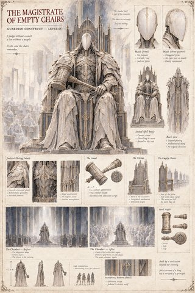
The Magistrate of Empty Chairs
A courtroom of chairs that fills, one silent copy at a time, with everything a party has already killed.
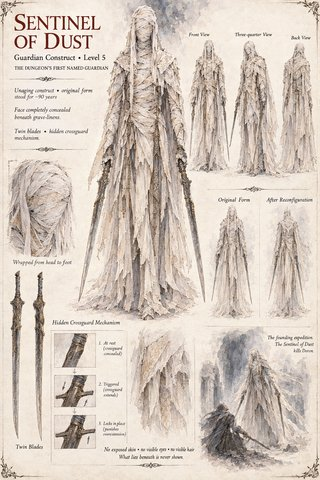
Sentinel of Dust
The dungeon's first named guardian — twin blades, a hidden crossguard, and no face beneath the wrappings.
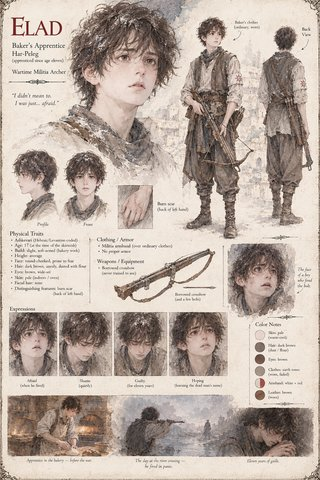
Elad
A baker's apprentice handed a borrowed crossbow, who fires once, in panic, and spends eleven years carrying it.
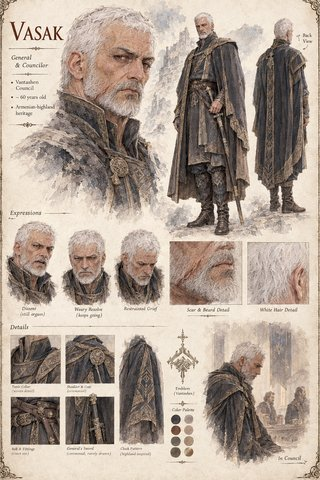
Vasak
The one voice on Vantashen's council who argued against the war for a full year — and was right.
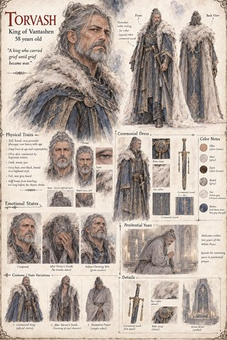
Torvash
A king who chooses war out of grief for a son the dungeon killed by simple bad timing.
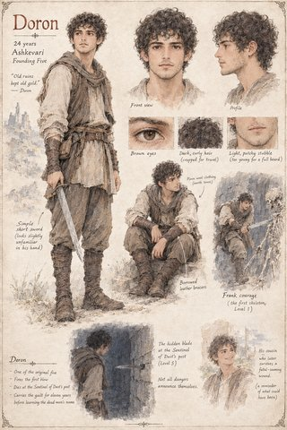
Doron
One of the dungeon's first five delvers, young and quick with a sword that still looks unfamiliar in his hand — and the fifth level is as far as he gets.
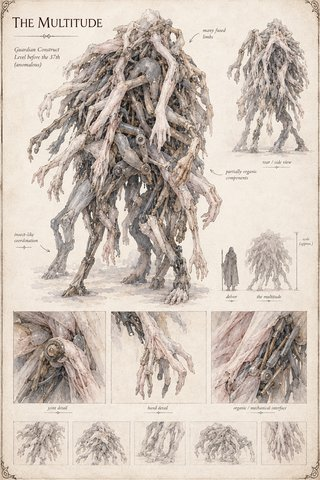
The Multitude
A guardian built of many fused, half-organic limbs, waiting where no guardian is supposed to be.
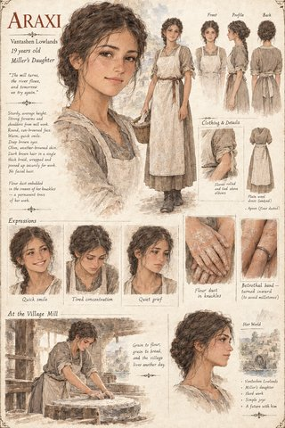
Araxi
A miller's daughter engaged to a soldier who won't be coming back from the war.
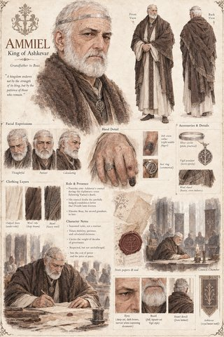
Ammiel
The King of Ashkevar, presiding over a diplomatic crisis he didn't start and can't fully contain.
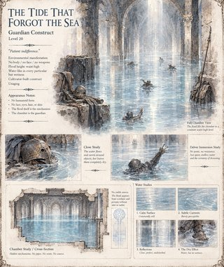
The Tide That Forgot the Sea
A flood with no source and no mercy, waist-high and patient, on the dungeon's twentieth level.
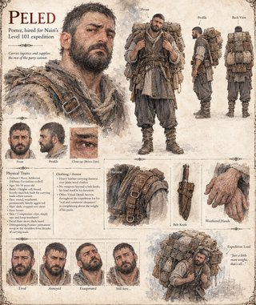
Peled
A porter hired to carry what the rest of the party can't — and to complain about it with real eloquence.
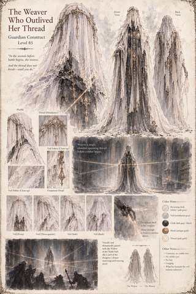
The Weaver Who Outlived Her Thread
A guardian who weaves a single chamber-spanning thread before combat begins — and it doesn't break until you do.
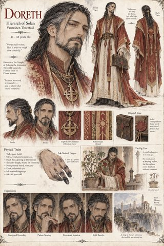
Doreth
Prince Vartaz's tutor of eleven years, who turns his own grief for the boy into a war he tells himself is a monument.
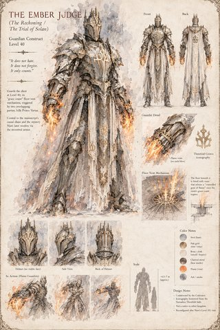
The Ember Judge
The guardian whose floor-vent mechanism, triggered by two overlapping parties, kills Prince Vartaz.
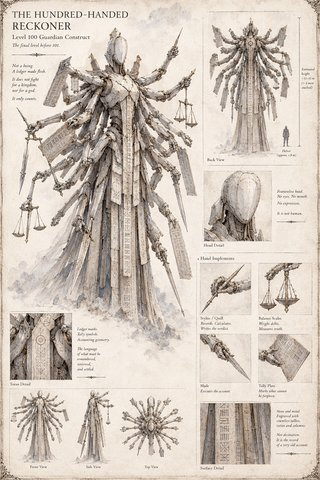
The Hundred-Handed Reckoner
Not a being. A ledger made flesh, armed with a stylus, a scale, a blade, and a tally plate.
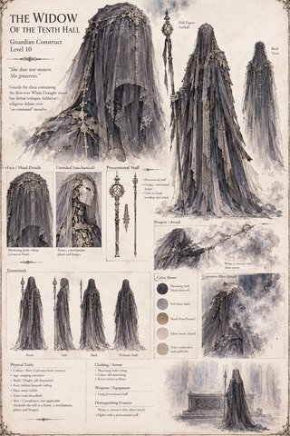
The Widow of the Tenth Hall
A veiled guardian who weeps a corrosive mist when struck — and turns out to be no widow at all.
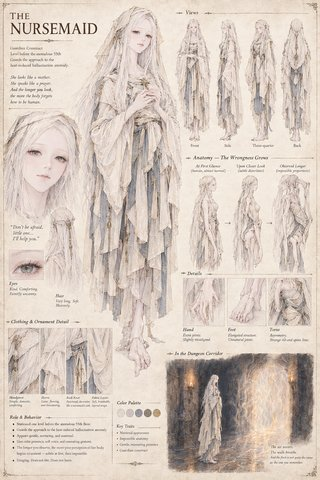
The Nursemaid
A gentle, maternal guardian whose anatomy grows steadily, deliberately wrong the longer you look at it.
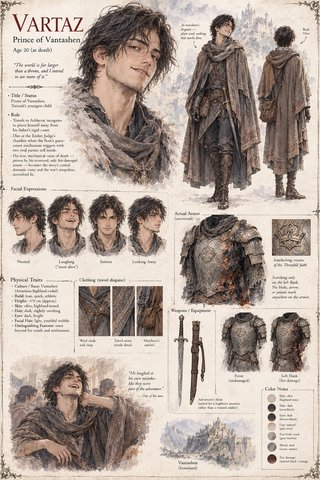
Vartaz
A prince who travels to Ashkevar in disguise to prove himself — and dies to a mechanism, not a rival.
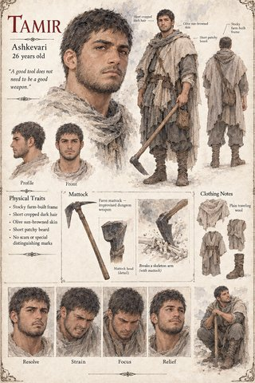
Tamir
A farmhand who breaks the dungeon's first skeleton apart with nothing but his own mattock.
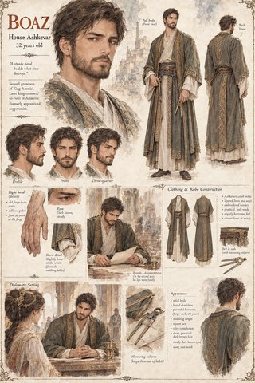
Boaz
A coppersmith's apprentice turned second-in-line heir, who reads every clause twice before he'll sign it.

The Observer
The old man at the bottom of the hole, who built every level of it and remembers everything anyone ever left behind.
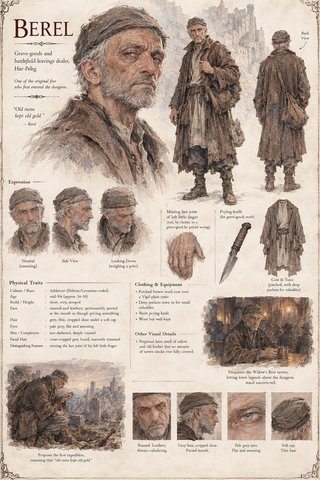
Berel
The one who first says the doorway is worth opening — and spends the rest of his life letting the legends grow.
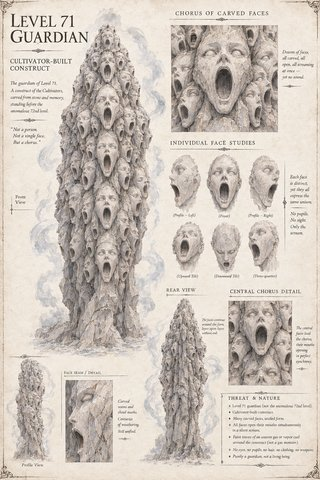
Level 71 Guardian
Dozens of carved stone faces, all screaming in perfect silence, all at once.
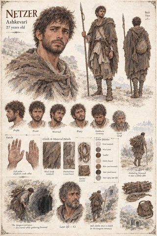
Netzer
A shepherd who goes looking for free firewood to pay a debt, and finds a hundred-level dungeon instead.
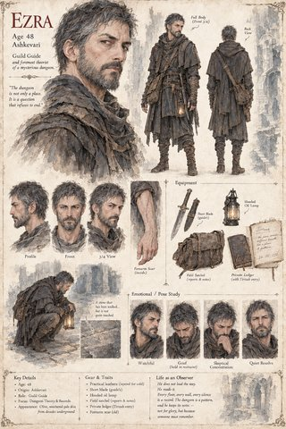
Ezra
The guild's foremost theorist of the dungeon, who never again tests an unproven idea on anyone but himself.
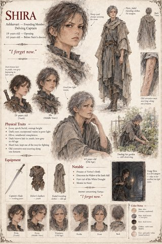
Shira
Present at the founding, present at the Widow's discovery, present at Vartaz's death — and the one who mentors Nairi.
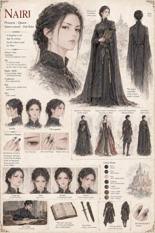
Nairi
Vartaz's own sister, who eventually holds the literal proof of how he died in her own two hands — and says nothing.
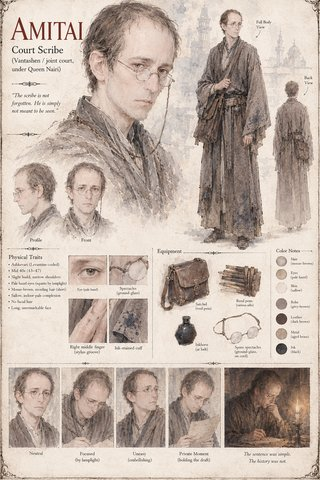
Amitai
The literal-minded scribe trusted to record Nairi's account — who can't quite leave a silence unexplained.
Scenes
-
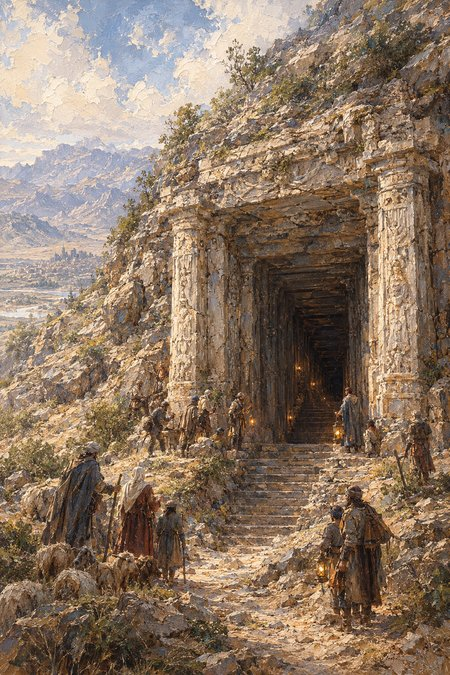
The entrance is found above Har-Peleg.
-
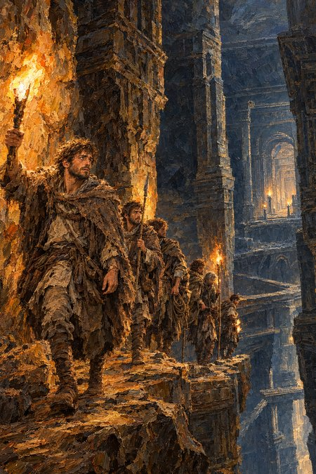
The founding five, descending.
-
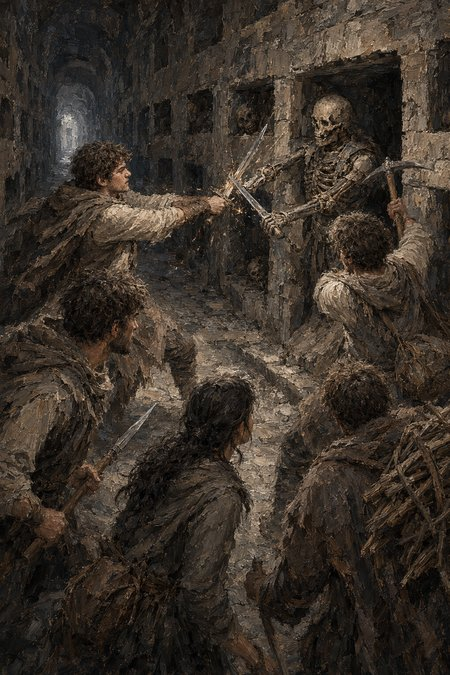
The founding five meet the Catacomb's first guardian.
-
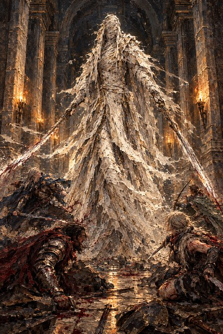
The Sentinel of Dust ends Doron's five levels.
-
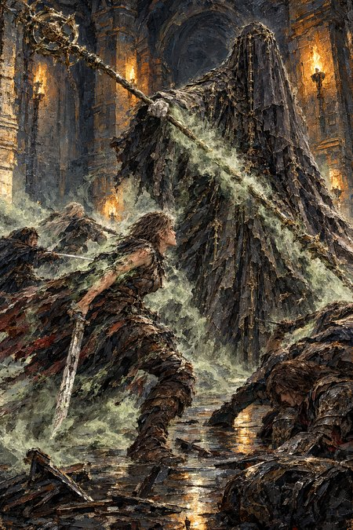
The Widow of the Tenth Hall, unveiled.
-
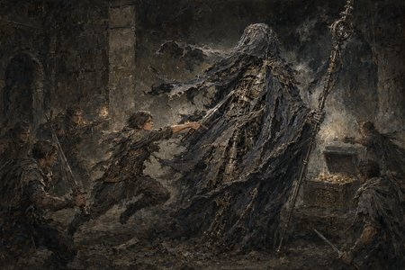
The Widow's chest, and the first Draught.
-
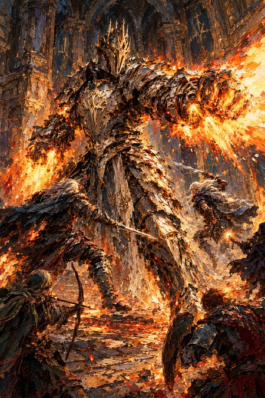
The Ember Judge, doing what it always does.
-
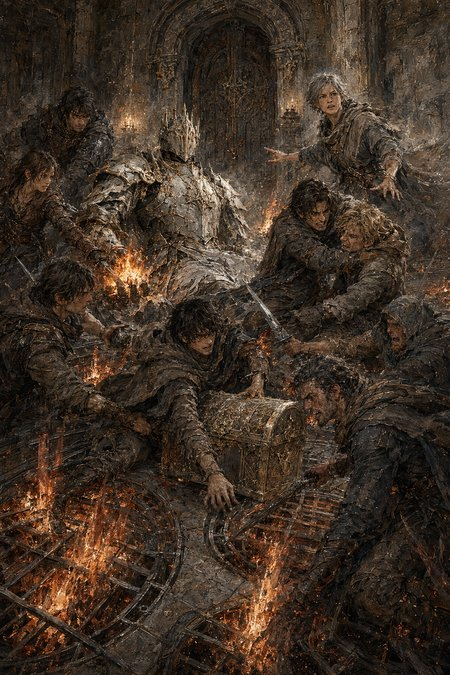
The grace count runs out.
-

Vartaz, and the floor that didn't know him.
-
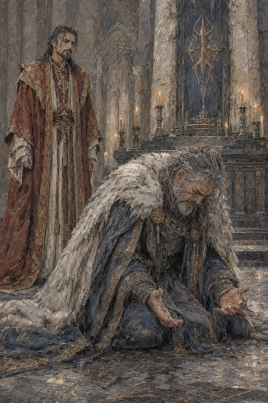
-
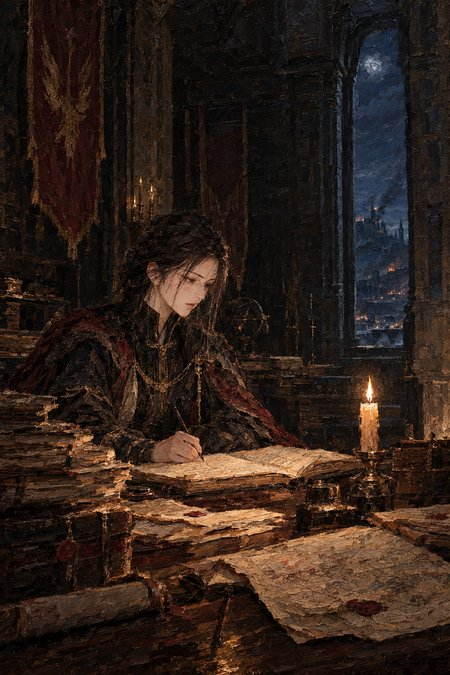
Nairi begins the private ledger.
-
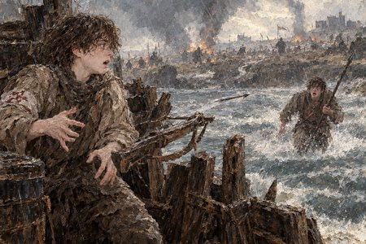
-
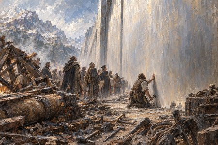
Oren reads the wall.
-
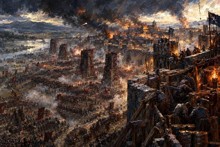
The siege of Har-Peleg.
-
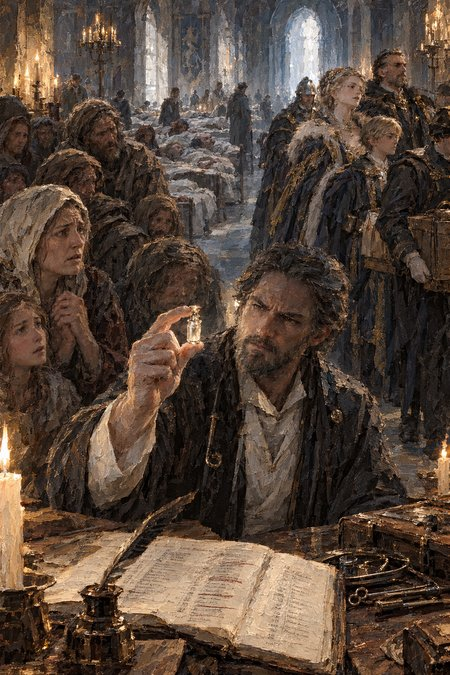
The White Draught, rationed.
-
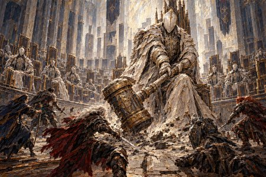
The Magistrate of Empty Chairs holds court.
-
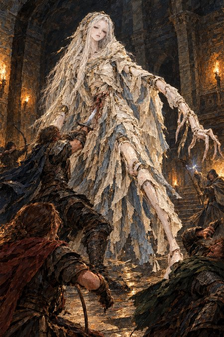
The Nursemaid falls.
-
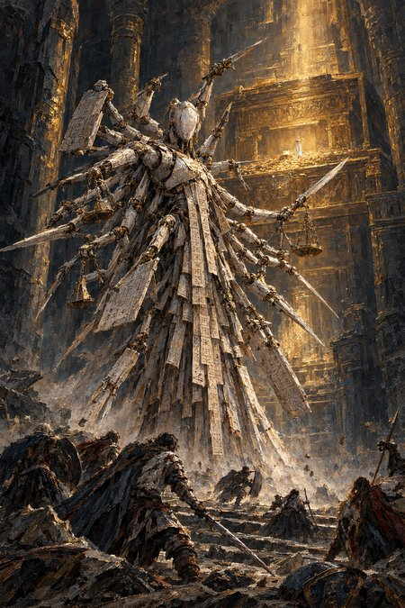
The Hundred-Handed Reckoner, and the hoard.
-
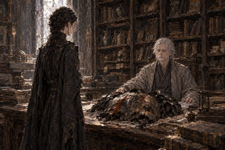
The Observer hands Nairi the armor.